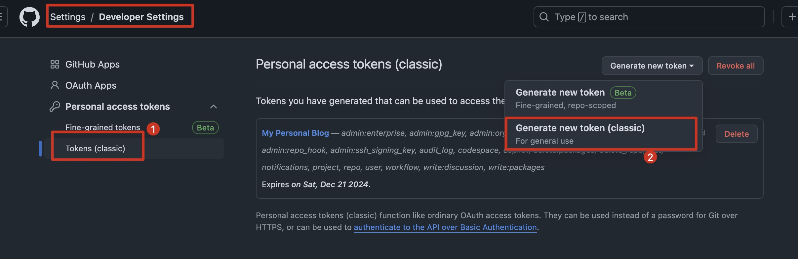
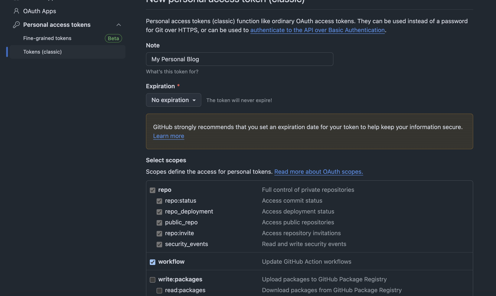
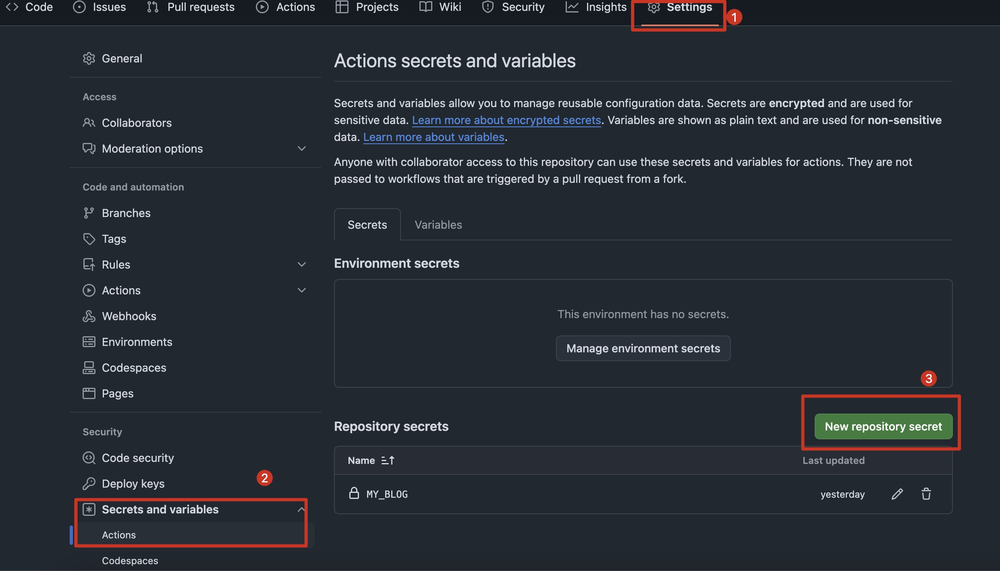
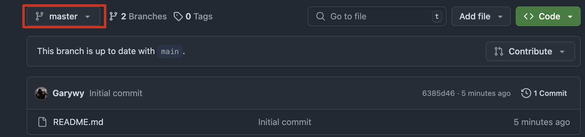
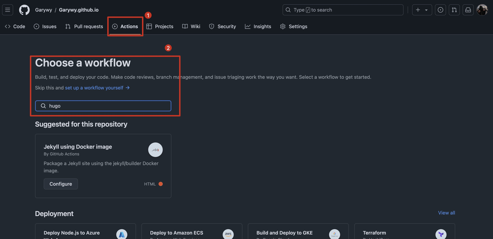
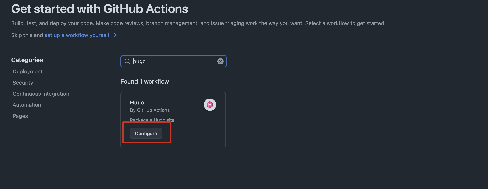

1. 前言
原本是因为学习任务要求需要做一个Web Service，结果阴差阳错的发现了hugo这个工具。所以借此机会利用hugo制作了自己的个人博客。此篇文章内容主要包括了搭建个人网站的流程，我在其中遇到的一些问题以及解决方案，希望能对你有帮助。
由于博主使用的是mac os，所以与windows系统可能有所差别。
2. hugo
2.1 hugo的安装
首先利用terminal安装hugo。
brew install hugo
如果没有brew的同学，需要提前安装homebrew（mac os）。
2.2 利用hugo建立博客
首先利用以下命令建立hugo博客。
hugo new site filename
[filename]填写任意你喜欢的名字，注意以后的所有操作均需要在该目录下进行。 创建成功后进入该目录，可以发现有9个文件。
- archetypes
该文件夹只有一个default.md文件，该文件内部只包含了文件头，主要的作用是每次创建新的md文件时，会按照该文件内设置的默认格式进行创建。
+++
title = '{{ replace .File.ContentBaseName "-" " " | title }}' #创建时的文件名称
date = {{ .Date }} #当前日期和时间
draft = true #是否为草稿
+++
以下代码是在hugo中创建新md文件的方法，其中的blog为自定义，创建成功后上述代码中的title部分就会变成blog。
hugo new blog.md
- content
该文件夹内部为空，需要用户自己进行添加。例如你希望你的博客里有一个关于学习的板块，那你就可以在这个目录下创建一个叫学习的文件夹。 - hugo.toml
该文件是hogo的配置文件，非常重要。由于toml语法较为麻烦，且查询到的资料大都是将toml文件改成了yaml文件，所以推荐使用yaml格式的配置文件。后续会详细说明。 - layouts
该文件夹在未添加主题之前为空，添加主题之后大多是html文件，用于展示各个页面。 - themes
该文件夹在下载主题之后，会被保存在该目录下，不用做任何改变。 - assets
用于存放css文件。 - data
没用过，不太清楚是什么作用。 - i18n
也没用过。 - static
该文件主要可以用来储存图片。
以上是关于相关文件的介绍，没有必要很仔细的记住，后面需要的话可以返回来看一看。
下来设置主题，需要进入Hugo Themes选择喜欢的主题。
我选择的主题是该网站的第一个主题PaperMod，需要注意的是每个主题的配置文件都不太一样，具体内容需要查看该主题相关的文档。
点击喜欢的主题之后会出现download的字样，点击download即可进入GitHub界面。
复制GitHub地址，并在终端输入以下代码。
git clone theme_address
将theme_address替换成你复制的GitHub地址
下载成功后会在你的根目录下找到名为该主题的文件夹，例如PaperMod下载成功后，会出现一个名为hugo-PaperMod的文件夹，将该文件夹整体移动到themes文件夹中。此后themes文件夹不需要再进行任何操作。然后在你的配置文件，也就是hugo.toml文件中添加以下内容。
theme = 'theme_name'
#theme = 'hugo-PaperMod'
以上为toml文件的写法，yaml语法为以下内容。
theme: theme_name
#theme: hugo-PaperMod
如果使用PaperMod主题，建议参照hugo博客搭建 | PaperMod主题进行配置文件的设置。 包括在content文件夹内进行的相关操作，也可以参照上述链接，讲述的非常清楚。
2.3 hugo的启动
hugo有两种启动方式。
hugo server
hugo server -D
上述两种命令均可以启动博客，在启动成功后复制提示的网址，便可以本地进入博客。
两种命令的区别在于是否显示头文件中draft: true的md文件。
hugo server无法显示draft字段为true的文件，这点需要注意，所以可以在默认文件中将该字段改为false，就会变得方便一点。
按顺序完成上述内容便可以利用hugo完成属于自己的静态博客。 除上述链接之外还可以参照该博客内容Hugo + PaperMod搭建技术博客。
2.4 hugo配置时遇到的问题
2.4.1 多语言
在配置文件hugo.yaml中，可以配置多种语言，例如我的配置文件中有中英双语。
languages:
en:
languageName: "English"
contentDir: content/English
weight: 1
profileMode:
enabled: true
title: Gary's House
subtitle: "It's happy to see you!"
imageUrl: "img/me.jpg" #图片放在static/img/me.gif
imageTitle:
imageWidth: 150
imageHeight: 150
buttons:
- name: 🧑💻Tech
url: posts/tech
...
zh:
languageName: "中文"
contentDir: content/Chinese
weight: 1
profileMode:
enabled: true
title: Gary's House
subtitle: "很高兴见到你！"
imageUrl: "img/me.jpg" #图片放在static/img/me.gif
imageTitle:
imageWidth: 150
imageHeight: 150
buttons:
- name: 🧑💻技术
url: posts/tech/
...
如果你参考了前文提到的链接中的配置文件的话，将其en后的部分复制粘贴一次，像上述所示。
为了做到多语言，需要在content文件夹下创建多个文件夹用来存放内容。如何我在content文件夹中就创建了English和Chinese两个文件夹。然后在各自的文件夹下放置各自的文件。
2.4.2 搜索页面
搜索页面主要功能是提供站内搜索。PaperMod主题提供了search.html，所以我们只需要做两件事情。
- 在与
posts文件夹处于同级目录下，创建search.md，更改头文件内容。
+++
title = "Search"
draft = false
layout = "search"
+++
- 然后在配置文件hugo.yaml中添加该设置。
- identifier: search
name: 🔍Search
url: search
weight: 1
identifier和name可以更改自己喜欢的内容，url后必须是search。
补充:
如果需要在搜索页面中显示当前时间的话，需要修改layouts/_default/search.html。将以下内容的第6行添加到自己的search.html文件中，便可以在搜索界面显示时间。
<header class="page-header">
<h1>{{- (printf "%s " .Title ) | htmlUnescape -}}
...
</h1>
<p class="post-date">{{ now.Format "2006-01-02" }}</p>
3. GitHub Pages部署
3.1 事前准备
首先需要登录自己的GitHub账号，并且分别创建两个仓库。一个仓库为私有仓库，名字自定义，我的仓库名是my_blog，另一个仓库为公开仓库，仓库名必须为username.github.io，username是你GitHub的用户名，该仓库主要是为了更新和显示博客内容。可以在创建仓库时添加readme文件，内容任意。
公共仓库按照下图进行操作，记得后续所有都是上传到master这个branch下。

3.2 上传本地文件至GitHub私有仓库
参考通过终端上传文件至GitHub这篇文章上传文件至GitHub仓库。
首先来到hugo的根目录（就是包含所有hugo文件的目录），然后按照下述顺序进行文件上传。
git init
git add .
git commit -m "comment"
git remote rm origin
git remote add origin private_repository_url
git push origin master
以上操作应该会成功将所有文件上传至私有仓库。
其中我遇到的错误以及解决方案：
- 源引用规格master没有匹配。
git branch -M master
- 尚未暂存以备提交的变更：修改尚未加入提交（使用 “git add” 和/或 “git commit -a”）。
git add --all
git commit -m "comment"
git remote rm origin
git remote add origin private_repository_url
git push origin master
3.3 上传本地public文件至GitHub公开仓库。
首先公开仓库的名字一定要是username.github.io。
上传的主要流程是：
- 在本地hugo的根目录下创建public文件夹。
hugo -F --cleanDestinationDir
- 将GitHub公开仓库克隆到本hugo根目录下，并将
public内所有文件和hugo.yaml（非常重要！！）添加到本地仓库。
git clone public_repository_url
cp hugo.yaml username.github.io/
mv public/* username.github.io/
cd username.github.io
- 上传本地仓库到GitHub
git add .
git commit -m "rebuild_site $(date)"
git push origin master
以上为初次上传时流程，之后的上传可以通过执行脚本，自动更新。
完成上述内容时，可以在本地运行hugo，并且用设置的username.github.io去尝试，如果成功则证明可行。
- 设置脚本文件，方便每次更新内容。
脚本文件可以保存在hugo的根目录下，名字随意，我的名字是issue.sh。
hugo -F --cleanDestinationDir
cp hugo.yaml public/
rm -rf username.github.io/*
mv public/* username.github.io/
rm -rf public
cd username.github.io/
git add .
git commit -m "rebuild_site $(date)"
git push -u origin +master
上述所有的username.github.io都需要换成自己的公开仓库名。
ssh文件的执行如下。
./issue.sh
如果以上的内容顺利完成，接下来就可以进行GitHub Actions的部署。
3.4 GitHub Actions部署
本次部署主要是让静态博客可以被其他人访问到，部署在GitHub网站中完成。
-
生成token
首先需要设置一个密钥，去到个人主页的Settings,然后找到左边最下面的Developer Settings，然后按照下述页面所示操作。
  点击generate token创建key，并且记住以ghp_开头的token。 -
添加token
接下来将刚刚得到的token，添加到下图位置，名字可以为MY_BLOG。  -
添加workflows
首先一定要确保当前branch为master。

然后按下图顺序执行，最终会生成一个hugo.yml文件。  hugo.yml文件内容参考如下：
name: pages-auto-build-deploy
on:
# workflow_dispatch:
push:
branches:
- main
jobs:
build-and-deploy:
runs-on: ubuntu-latest
steps:
- uses: actions/checkout@v2
with:
submodules: true
fetch-depth: 0
- name: Setup Hugo
uses: peaceiris/actions-hugo@v2
with:
hugo-version: '0.130.0' #需要更改，结合自己的hugo版本进行更改 ，利用命令hugo version可查看。
extended: true #根据hugo version查询结果判断。
- name: Build Hugo
run: hugo
- name: Deploy
uses: peaceiris/actions-gh-pages@v3
with:
GitHub_token: ${{ secrets.MY_BLOG }} # MY_BLOG为刚刚添加的token名称
publish_dir: ./public
commit_message: ${{ GitHub.event.head_commit.message }}
完成以上所有操作后，可以在GitHub顶端的Actions内查看workflows是否成功启动，成功启动后任何人都可以直接利用username.github.io访问你的博客。
参考链接
本人愚笨，参考了很多大神的博客和文章，才完成了自己博客的基本内容。很多补充内容可以参考以下链接。